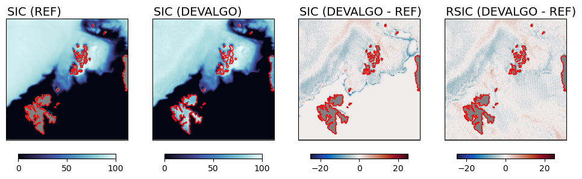
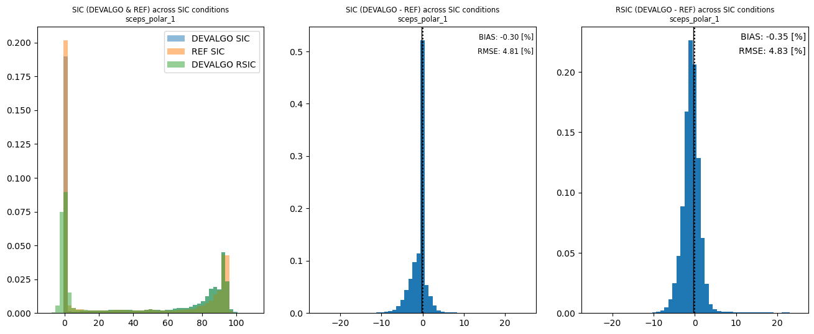
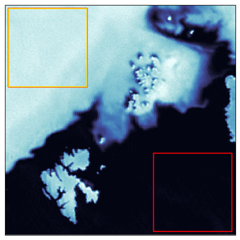
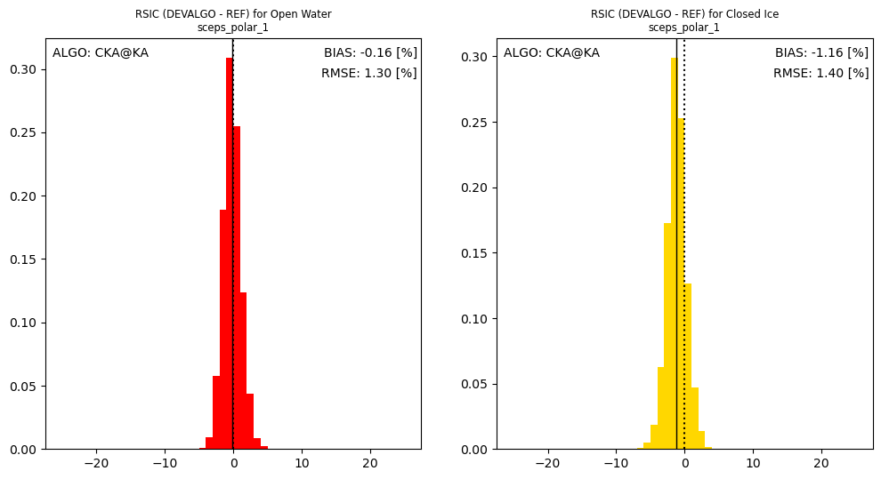
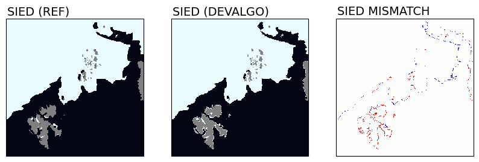
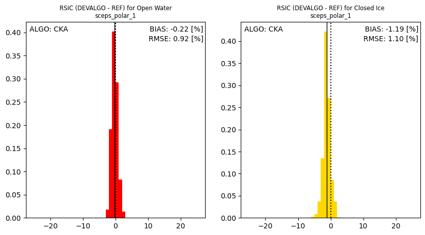
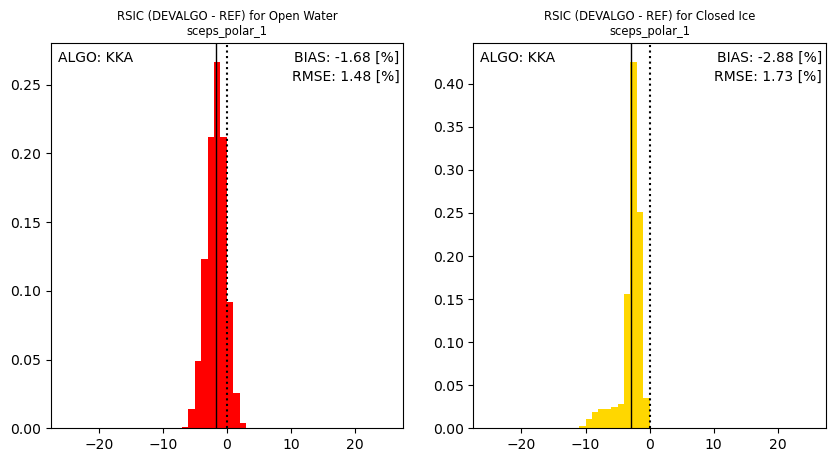
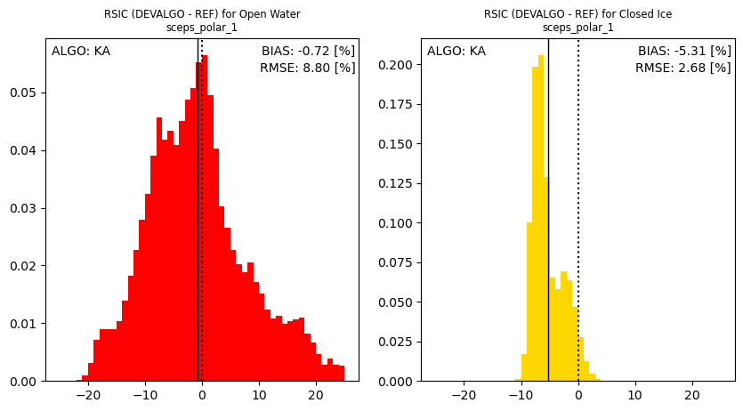

import xarray as xr
import numpy as np
from copy import copy
import pyresample as pr
from matplotlib import pylab as plt
import cmocean
import matplotlib
from sirrdp import rrdp_file
from pmr_sic import tiepoints as tp
input_test_card = 'sceps_polar_1'
# read the SIC from the L2 netCDF file:
l2_n = '../data/output/cimr_devalgo_l2_sic_ease2-1.0km-testcard_sceps-polar1.nc'
ds = xr.open_dataset(l2_n)
l2_sic = ds['ice_conc'][0,:].data
l2_rsic = ds['raw_ice_conc_values'][0,:].data
l2_sied = ds['ice_edge'][0,:].data.astype('int16')
adef,_ = pr.utils.load_cf_area(l2_n, )
cart_crs = adef.to_cartopy_crs()
main_algo = ds.attrs['algorithm_name']
print(" +++ CHARACTERISTICS +++ ")
print(ds.attrs['algorithm_name'])
print(ds.attrs['use_oza_adjusted_tbs'])
print(ds.attrs['algorithm_tuning'])
+++ CHARACTERISTICS +++
CKA@KA
Yes
CIMRL1B-ALLFEEDS
Show code cell content
owci_flg_cice = 2
owci_flg_ow = 1
owci_flg_miz = 3
tc_tbs = dict()
if input_test_card == 'sceps_polar_1':
# load SIC truth from the GEO file
geo_file = '../data/ref/cimr_sceps_geo_card_devalgo_polarscene_1_20161217_harmonised_v2p0_surface.nc'
tc_ds = xr.open_dataset(geo_file)
print("GEO file: ", geo_file)
tc_sic = tc_ds['sea_ice_concentration'][0,:,:].to_masked_array().transpose()
# load TOA Tbs from the TOA file
toa_file = '../data/ref/cimr_sceps_toa_card_devalgo_polarscene_1_20161217_v2p0_aa_000.nc'
tc_l1b = xr.open_dataset(toa_file)
print("TOA file: ", toa_file)
toa_band_name = 'toa_tbs_{b:}_{p:}po'
tc_tbs['tb06v'] = tc_l1b[toa_band_name.format(b='C', p='V')].isel(time=0).sel(incidence_angle=55).data.transpose()
tc_tbs['tb19v'] = tc_l1b[toa_band_name.format(b='Ku', p='V')].isel(time=0).sel(incidence_angle=55).data.transpose()
tc_tbs['tb37v'] = tc_l1b[toa_band_name.format(b='Ka', p='V')].isel(time=0).sel(incidence_angle=55).data.transpose()
tc_tbs['tb37h'] = tc_l1b[toa_band_name.format(b='Ka', p='H')].isel(time=0).sel(incidence_angle=55).data.transpose()
tc_owci = np.zeros_like(tc_tbs['tb06v']).astype('int')
tc_owci[-500:-20,20:500] = owci_flg_cice
tc_owci[20:500,-500:-20] = owci_flg_ow
# how many pixels to mask around the test card
margin = 3
else:
tc_fn = os.path.join(tc_path, tc_fn)
tc_l1b = xr.open_dataset(tc_fn,)
tc_surf = tc_l1b['surfaces'].data
# how many pixels to mask around the test card
margin = 15
# use the surfaces variable to find where is ice and water
tc_ice_mask = (tc_surf == 1)+(tc_surf == 2)
tc_ocean_mask = (tc_surf == 5)+(tc_surf == 6)+(tc_surf == 7)+(tc_surf == 8)
tc_oceanice_mask = tc_ice_mask + tc_ocean_mask
tc_sic = np.ma.array(np.zeros_like(tc_surf))
tc_sic[tc_ice_mask] = 100.
tc_sic[~tc_oceanice_mask] = np.ma.masked
# load TOA Tbs
toa_band_name = '{b:}_band_{p:}'
tc_tbs['tb06v'] = tc_l1b[toa_band_name.format(b='C', p='V')].to_masked_array()
tc_tbs['tb19v'] = tc_l1b[toa_band_name.format(b='Ku', p='V')].to_masked_array()
tc_tbs['tb37v'] = tc_l1b[toa_band_name.format(b='Ka', p='V')].to_masked_array()
tc_tbs['tb37h'] = tc_l1b[toa_band_name.format(b='Ka', p='H')].to_masked_array()
print(tc_tbs['tb06v'].shape, tc_tbs['tb06v'].min(), tc_tbs['tb06v'].max())
tc_owci = np.zeros_like(tc_tbs['tb06v']).astype('int')
tc_owci[tc_sic==1] = owci_flg_cice
tc_owci[tc_sic==0] = owci_flg_ow
if input_test_card == 'radiometric':
# Remove the top-most and right-most areas of the Radiometric TestCard
# Because we focus on the cells for the time being.
_margin = 200
tc_geom = np.ones_like(tc_surf).astype('bool')
tc_geom[:,:_margin] = False
tc_geom[-_margin:,:] = False
tc_sic[~tc_geom] = np.ma.masked
for ch in tc_tbs.keys():
tc_tbs[ch][~tc_geom] = np.ma.masked
# Remove the border of the TestCard (because of the spill-over from the 0K from outside the scene):
tc_border = np.ones_like(tc_sic).astype('bool')
tc_border[-margin:,:] = False
tc_border[:margin,:] = False
tc_border[:,-margin:] = False
tc_border[:,:margin] = False
tc_sic[~tc_border] = np.ma.masked
for ch in tc_tbs.keys():
tc_tbs[ch] = np.ma.asarray(tc_tbs[ch])
tc_tbs[ch][~tc_border] = np.ma.masked
# evaluate Reference SIED:
tc_sied = np.ma.where(tc_sic >= 15, 1, 0).astype('int16')
GEO file: ../data/ref/cimr_sceps_geo_card_devalgo_polarscene_1_20161217_harmonised_v2p0_surface.nc
TOA file: ../data/ref/cimr_sceps_toa_card_devalgo_polarscene_1_20161217_v2p0_aa_000.nc
def blockshaped(arr, nrows, ncols):
"""
from: http://stackoverflow.com/questions/16873441/form-a-big-2d-array-from-multiple-smaller-2d-arrays/16873755#16873755
Return an array of shape (n, nrows, ncols) where
n * nrows * ncols = arr.size
If arr is a 2D array, the returned array looks like n subblocks with
each subblock preserving the "physical" layout of arr.
"""
h, w = arr.shape
return (arr.reshape(h//nrows, nrows, -1, ncols)
.swapaxes(1,2)
.reshape(-1, nrows, ncols))
coarsening_factor = 4
coarsened_shape = tuple((np.array(l2_sic.shape)//coarsening_factor).astype('int'))
area_km2 = (1 * coarsening_factor)**2
l2_sic = blockshaped(l2_sic, coarsening_factor, coarsening_factor).mean(axis=1).mean(axis=1).reshape(coarsened_shape)
l2_rsic = blockshaped(l2_rsic, coarsening_factor, coarsening_factor).mean(axis=1).mean(axis=1).reshape(coarsened_shape)
tc_sic = blockshaped(tc_sic, coarsening_factor, coarsening_factor).mean(axis=1).mean(axis=1).reshape(coarsened_shape)
tc_sied = blockshaped(tc_sied, coarsening_factor, coarsening_factor).min(axis=1).min(axis=1).reshape(coarsened_shape)
l2_sied = blockshaped(l2_sied, coarsening_factor, coarsening_factor).min(axis=1).min(axis=1).reshape(coarsened_shape)
tc_owci = blockshaped(tc_owci, coarsening_factor, coarsening_factor).max(axis=1).max(axis=1).reshape(coarsened_shape)
cmap_sic = copy(cmocean.cm.ice)
cmap_sic.set_bad('grey')
vmin = 0
vmax = 100
cmap_dif = copy(cmocean.cm.balance)
cmap_dif.set_bad('grey')
dmin = -25
dmax = -dmin
sic_diff = l2_sic - tc_sic
rsic_diff = l2_rsic - tc_sic
# visualize / plot
fig, ax = plt.subplots(nrows=1, ncols=4, sharex=True, sharey=True, figsize=(12,6), subplot_kw=dict(projection=cart_crs))
# first col : SIC truth
c = ax[0].imshow(tc_sic, transform=cart_crs, extent=cart_crs.bounds, origin='upper',
cmap=cmap_sic,vmin=vmin,vmax=vmax)
ax[0].coastlines(color='red')
ax[0].text(0.01,1.01,'SIC (REF)',va='bottom',fontsize=14,transform=ax[0].transAxes)
plt.colorbar(c,orientation='horizontal', pad=0.05, shrink=0.8)
# second col : SIC algorithm
c = ax[1].imshow(l2_sic, transform=cart_crs, extent=cart_crs.bounds, origin='upper',
cmap=cmap_sic,vmin=vmin,vmax=vmax)
ax[1].coastlines(color='red')
ax[1].text(0.01,1.01,'SIC (DEVALGO)',va='bottom',fontsize=14,transform=ax[1].transAxes)
plt.colorbar(c,orientation='horizontal', pad=0.05, shrink=0.8)
# third col : SIC diff
c = ax[2].imshow(sic_diff, transform=cart_crs, extent=cart_crs.bounds, origin='upper',
cmap=cmap_dif,vmin=dmin,vmax=dmax)
ax[2].coastlines(color='red')
ax[2].text(0.01,1.01,'SIC (DEVALGO - REF)',va='bottom',fontsize=14,transform=ax[2].transAxes)
plt.colorbar(c,orientation='horizontal', pad=0.05, shrink=0.8)
# fourth col : rSIC diff
c = ax[3].imshow(rsic_diff, transform=cart_crs, extent=cart_crs.bounds, origin='upper',
cmap=cmap_dif,vmin=dmin,vmax=dmax)
ax[3].coastlines(color='red')
ax[3].text(0.01,1.01,'RSIC (DEVALGO - REF)',va='bottom',fontsize=14,transform=ax[3].transAxes)
plt.colorbar(c,orientation='horizontal', pad=0.05, shrink=0.8)
plt.show()

fig, ax = plt.subplots(nrows=1, ncols=3, figsize=(16,6),)
nbins=51
ax[0].hist(l2_sic.flatten(), bins=nbins, range=[-10,110], density=True, alpha=0.5, label='DEVALGO SIC')
ax[0].hist(tc_sic.flatten(), bins=nbins, range=[-10,110], density=True, alpha=0.5, label='REF SIC')
ax[0].hist(l2_rsic.flatten(), bins=nbins, range=[-10,110], density=True, alpha=0.5, label='DEVALGO RSIC')
ax[0].legend()
ax[0].set_title("SIC (DEVALGO & REF) across SIC conditions\n{}".format(input_test_card), fontsize='small')
sic_diff_1d = sic_diff.compressed()
hist_range = (dmin, dmax)
ax[1].axvline(x=0, color='k', linestyle=':')
ax[1].hist(sic_diff_1d, bins=nbins, range=hist_range, density=True)
ax[1].axvline(x=sic_diff_1d.mean(), color='k', linestyle='-', lw=1)
ax[1].set_title("SIC (DEVALGO - REF) across SIC conditions\n{}".format(input_test_card), fontsize='small')
ax[1].text(0.99,0.98, 'BIAS: {:.2f} [%]'.format(sic_diff_1d.mean()),
transform=ax[1].transAxes, ha='right', va='top', fontsize='small')
ax[1].text(0.99,0.93, 'RMSE: {:.2f} [%]'.format(sic_diff_1d.std()),
transform=ax[1].transAxes, ha='right', va='top', fontsize='small')
rsic_diff_1d = rsic_diff.compressed()
hist_range = (dmin, dmax)
ax[2].axvline(x=0, color='k', linestyle=':')
ax[2].hist(rsic_diff_1d, bins=nbins, range=hist_range, density=True)
ax[2].axvline(x=rsic_diff_1d.mean(), color='k', linestyle='-', lw=1)
ax[2].set_title("RSIC (DEVALGO - REF) across SIC conditions\n{}".format(input_test_card), fontsize='small')
ax[2].text(0.99,0.98, 'BIAS: {:.2f} [%]'.format(rsic_diff_1d.mean()),
transform=ax[2].transAxes, ha='right', va='top', )
ax[2].text(0.99,0.93, 'RMSE: {:.2f} [%]'.format(rsic_diff_1d.std()),
transform=ax[2].transAxes, ha='right', va='top', )
plt.show()

fig, ax = plt.subplots(figsize=(6,6), subplot_kw=dict(projection=cart_crs))
ax.imshow(l2_rsic, transform=cart_crs, extent=cart_crs.bounds, origin='upper',
cmap=cmap_sic,vmin=vmin,vmax=vmax)
ax.contour(tc_owci, levels=(0.99, 1.99), colors=('red','gold'), transform=cart_crs, extent=cart_crs.bounds, origin='upper')
plt.show()

fig, ax = plt.subplots(nrows=1, ncols=2, sharex=True, figsize=(12,6),)
sic_diff_ow_1d = rsic_diff[tc_owci==1].compressed()
hist_range = (dmin, dmax)
ax[0].axvline(x=0, color='k', linestyle=':')
ax[0].hist(sic_diff_ow_1d, bins=50, range=hist_range, density=True, color='red')
ax[0].axvline(x=sic_diff_ow_1d.mean(), color='k', linestyle='-', lw=1)
ax[0].set_title("RSIC (DEVALGO - REF) for Open Water\n{}".format(input_test_card), fontsize='small')
ax[0].text(0.99,0.98, 'BIAS: {:.2f} [%]'.format(sic_diff_ow_1d.mean()),
transform=ax[0].transAxes, ha='right', va='top')
ax[0].text(0.99,0.93, 'RMSE: {:.2f} [%]'.format(sic_diff_ow_1d.std()),
transform=ax[0].transAxes, ha='right', va='top')
ax[0].text(0.02,0.98, 'ALGO: {}'.format(main_algo.upper()),
transform=ax[0].transAxes, ha='left', va='top')
sic_diff_ci_1d = rsic_diff[tc_owci==2].compressed()
hist_range = (dmin, dmax)
ax[1].axvline(x=0, color='k', linestyle=':')
ax[1].hist(sic_diff_ci_1d, bins=50, range=hist_range, density=True, color='gold')
ax[1].axvline(x=sic_diff_ci_1d.mean(), color='k', linestyle='-', lw=1)
ax[1].set_title("RSIC (DEVALGO - REF) for Closed Ice\n{}".format(input_test_card), fontsize='small')
ax[1].text(0.99,0.98, 'BIAS: {:.2f} [%]'.format(sic_diff_ci_1d.mean()),
transform=ax[1].transAxes, ha='right', va='top')
ax[1].text(0.99,0.93, 'RMSE: {:.2f} [%]'.format(sic_diff_ci_1d.std()),
transform=ax[1].transAxes, ha='right', va='top')
ax[1].text(0.02,0.98, 'ALGO: {}'.format(main_algo.upper()),
transform=ax[1].transAxes, ha='left', va='top')
plt.show()

def prepare_IIEE_mask(l2_sied, tc_sied):
Flag_SIE = np.full(np.shape(l2_sied), np.nan)
Flag_SIE[tc_sied == l2_sied] = 0
Flag_SIE[tc_sied < l2_sied] = 1
Flag_SIE[tc_sied > l2_sied] = -1
Flag_SIE[(tc_sied==np.ma.masked)+(l2_sied==np.ma.masked)] = 0
return Flag_SIE
l2_sied = np.ma.array(l2_sied, mask=tc_sied.mask)
iiee_field = prepare_IIEE_mask(l2_sied, tc_sied)
fig, ax = plt.subplots(figsize=(10,8), ncols=3, sharex=True, sharey=True, subplot_kw=dict(projection=cart_crs))
ax[0].imshow(tc_sied, transform=cart_crs, extent=cart_crs.bounds, origin='upper',
cmap=cmap_sic,vmin=0,vmax=1, interpolation='none')
ax[0].text(0.01,1.01,'SIED (REF)',va='bottom',fontsize=14,transform=ax[0].transAxes)
ax[1].imshow(l2_sied, transform=cart_crs, extent=cart_crs.bounds, origin='upper',
cmap=cmap_sic,vmin=0,vmax=1, interpolation='none')
ax[1].text(0.01,1.01,'SIED (DEVALGO)',va='bottom',fontsize=14,transform=ax[1].transAxes)
ax[2].imshow(iiee_field, transform=cart_crs, extent=cart_crs.bounds, origin='upper',
cmap=matplotlib.cm.bwr,vmin=-1,vmax=1, interpolation='none')
ax[2].text(0.01,1.01,'SIED MISMATCH',va='bottom',fontsize=14,transform=ax[2].transAxes)
#ax[0].set_xlim(1000000,None)
#ax[0].set_ylim(-1000000,None)
plt.show()

def compute_siedge_metrics(l2_sied, tc_sied, area_km2):
Flag_SIE = prepare_IIEE_mask(l2_sied, tc_sied)
Underestimation = np.sum(Flag_SIE == -1) * area_km2
Overestimation = np.sum(Flag_SIE == 1) * area_km2
IIEE_metric = Underestimation + Overestimation
return(IIEE_metric, Underestimation, Overestimation)
IIEE, UE, OE = compute_siedge_metrics(l2_sied, tc_sied, area_km2)
print("Integrated Ice Edge Error: ", IIEE)
print("UnderEstimation: ", UE)
print("OverEstimation: ", OE)
Integrated Ice Edge Error: 20752
UnderEstimation: 7520
OverEstimation: 13232
for alg in ('CKA', 'KKA', 'KA'):
# read the SIC from the L2 netCDF file:
l2_n = '../data/output/cimr_devalgo_l2_sic-{}_ease2-1.0km-testcard_sceps-polar1.nc'.format(alg)
ds = xr.open_dataset(l2_n)
_l2_sic = ds['ice_conc'][0,:].data
_l2_rsic = ds['raw_ice_conc_values'][0,:].data
_l2_sic = blockshaped(_l2_sic, coarsening_factor, coarsening_factor).mean(axis=1).mean(axis=1).reshape(coarsened_shape)
_l2_rsic = blockshaped(_l2_rsic, coarsening_factor, coarsening_factor).mean(axis=1).mean(axis=1).reshape(coarsened_shape)
_sic_diff = _l2_sic - tc_sic
_rsic_diff = _l2_rsic - tc_sic
fig, ax = plt.subplots(nrows=1, ncols=2, sharex=True, figsize=(10,5),)
sic_diff_ow_1d = _rsic_diff[tc_owci==1].compressed()
hist_range = (dmin, dmax)
ax[0].axvline(x=0, color='k', linestyle=':')
ax[0].hist(sic_diff_ow_1d, bins=50, range=hist_range, density=True, color='red')
ax[0].axvline(x=sic_diff_ow_1d.mean(), color='k', linestyle='-', lw=1)
ax[0].set_title("RSIC (DEVALGO - REF) for Open Water\n{}".format(input_test_card), fontsize='small')
ax[0].text(0.99,0.98, 'BIAS: {:.2f} [%]'.format(sic_diff_ow_1d.mean()),
transform=ax[0].transAxes, ha='right', va='top')
ax[0].text(0.99,0.93, 'RMSE: {:.2f} [%]'.format(sic_diff_ow_1d.std()),
transform=ax[0].transAxes, ha='right', va='top')
ax[0].text(0.02,0.98, 'ALGO: {}'.format(alg.upper()),
transform=ax[0].transAxes, ha='left', va='top')
sic_diff_ci_1d = _rsic_diff[tc_owci==2].compressed()
hist_range = (dmin, dmax)
ax[1].axvline(x=0, color='k', linestyle=':')
ax[1].hist(sic_diff_ci_1d, bins=50, range=hist_range, density=True, color='gold')
ax[1].axvline(x=sic_diff_ci_1d.mean(), color='k', linestyle='-', lw=1)
ax[1].set_title("RSIC (DEVALGO - REF) for Closed Ice\n{}".format(input_test_card), fontsize='small')
ax[1].text(0.99,0.98, 'BIAS: {:.2f} [%]'.format(sic_diff_ci_1d.mean()),
transform=ax[1].transAxes, ha='right', va='top')
ax[1].text(0.99,0.93, 'RMSE: {:.2f} [%]'.format(sic_diff_ci_1d.std()),
transform=ax[1].transAxes, ha='right', va='top')
ax[1].text(0.02,0.98, 'ALGO: {}'.format(alg.upper()),
transform=ax[1].transAxes, ha='left', va='top')
plt.show()


